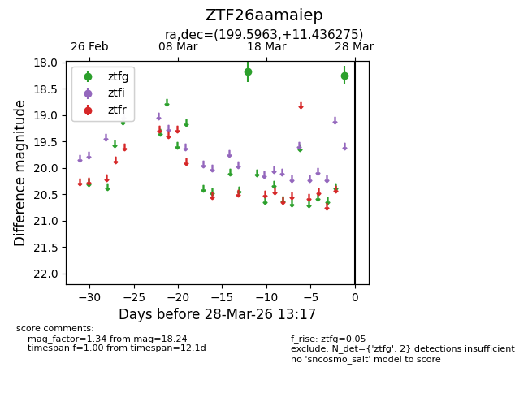
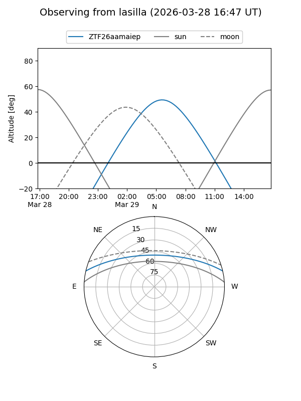
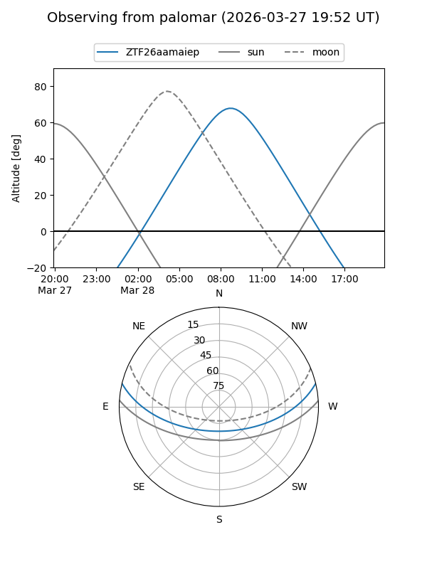

ZTF26aamaiep
Target ZTF26aamaiep at 2026-03-28 13:20
Aliases and brokers:
FINK: link
Lasair: link
ALeRCE: link
alt names
ZTF26aamaiep (ztf,fink_ztf)
Coordinates:
equatorial (ra, dec) = 199.5963,+11.43628
equatorial (HMS+DMS) = 13:18:23.11,+11:26:10.59
galactic (l, b) = (326.2008,+73.07895)
Flags:
Photometry:
last ztfg=18.24
2 ztfg detections
Lightcurve

Visibility


Additional plots